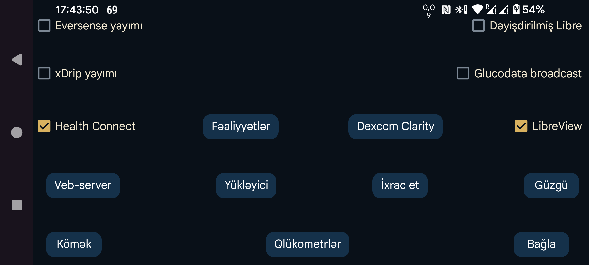

ar az de es fa hi it ja ko nl pl ru tr uk uz en
Hər dəqiqəlik qlükoza göstəricilərini Health Connect-ə göndərir. Digər tətbiqlərə, məsələn, Google Fit-ə həmin göstəricilərə giriş icazəsi verə bilərsiniz. Google Fit-ə qoşulan digər tətbiqlər də öz növbəsində bu məlumatlardan istifadə edə bilər.
Juggluco-nun Health Connect-dən fiziki fəaliyyət məlumatlarını oxumasını tənzimləyin.
FreeStyle Libre 2 və 3 sensorlarından alınan qlükoza göstəricilərini və daxil edilmiş miqdarları LibreView-a göndərmək, həmçinin Libre 3 sensorunu aktivləşdirərkən istifadə olunan hesab ID-sini almaq üçün LibreView-a qoşulun. Tənzimləmələri dəyişmək üçün bu sətrə toxunun.
Patched Libre yayımının özündə problem yoxdur, lakin xDrip bu yolla aldığı qlükoza göstəricilərini dəyişdirir. İstifadəçilər bu yayımı əsasən xDrip ilə işlətdiklərinə görə onu ləğv etməyi planlaşdırmışdım.
xDrip qlükoza göstəricilərini Eversense yayımından aldıqda və ya Juggluco-nun veb-serveri Nightscout məlumat mənbəyi kimi seçildikdə onları dəyişdirmir.
Qlükoza göstəricilərini xDrip-ə hər dəqiqə ötürməyə imkan verən başqa bir yayım növüdür. xDrip-də avadanlıq məlumat mənbəyi kimi 640G/EverSense seçilməlidir.
xDrip hər 5 dəqiqədə yalnız bir göstərici qəbul etməyə çalışdığı üçün gələn göstəricilərin demək olar ki, hamısını nəzərə almır. Bu məhdudiyyəti xDrip-in mənbə kodunda, app/src/main/java/com/eveningoutpost/dexdrip/models/BgReading.java faylında 4 * 60 * 1000 ifadəsini 55 * 1000 ilə əvəz edərək aradan qaldıra bilərsiniz:
public static BgReading readingNearTimeStamp(long startTime) {
long margin = (55 * 1000);
return readingNearTimeStamp(startTime, margin);
}
Patched Libre yayımı ilə müqayisədə üstünlüyü budur ki, xDrip qlükoza göstəricilərini naməlum üsulla dəyişdirmir.
xDrip-in Tənzimləmələr → Tətbiqlərarası tənzimləmələr → Yerli yayım funksiyası ilə eyni növdə yayım göndərir. AndroidAPS kimi tətbiqlər həmin yayıma qulaq asır. Əsl xDrip yayımı 5 dəqiqədən bir göndərildiyi halda, sensor hər dəqiqə qlükoza göstəricisi göndərirsə, Juggluco da yayımı hər dəqiqə göndərir.
xDrip yayımı ilə eyni məqsədə xidmət edən yeni yayım növüdür. Alınan qlükoza göstəricilərini logcat-ə yazan sadə nümunə tətbiqi Glucose broadcasts səhifəsində tapa bilərsiniz. G-Watch-da məlumat mənbəyi kimi Juggluco seçirsinizsə, bu yayımı aktiv etməlisiniz.
Yayımı qəbul edən tətbiqlər siyahıda göstərilir. Məlumat göndərmək istədiyiniz tətbiqləri işarələyin.
xDrip saatları və bəzi Nightscout tətbiqləri ilə istifadə oluna bilən veb-server. Əvvəllər xDrip webserver adlanırdı.
Məlumatları Nightscout serverinə yükləyir.
Bütün məlumatları internet bağlantısı vasitəsilə başqa qurğudakı Juggluco-ya göndərərək onun eyni məlumatları göstərən surətini yaradır. Qəbul edən qurğuda mövcud olan məlumatların üzərinə yazılacaq.
Məlumatları faylda saxlayır.